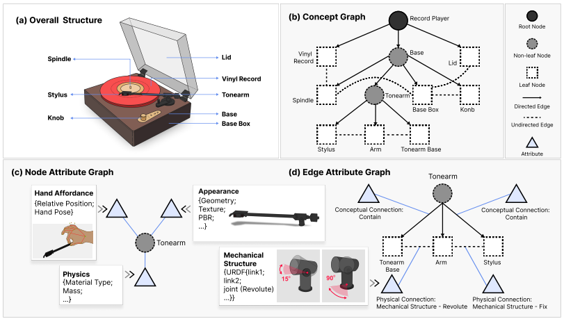
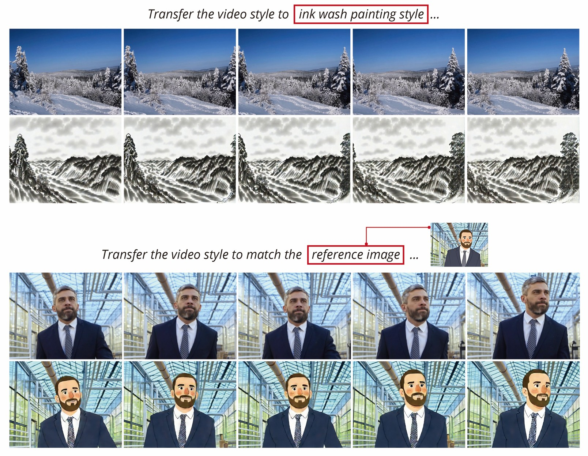
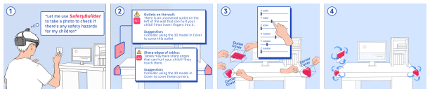
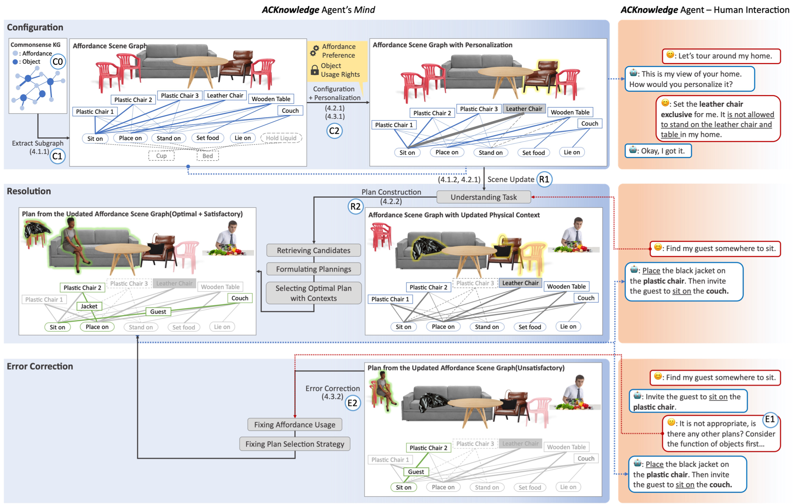
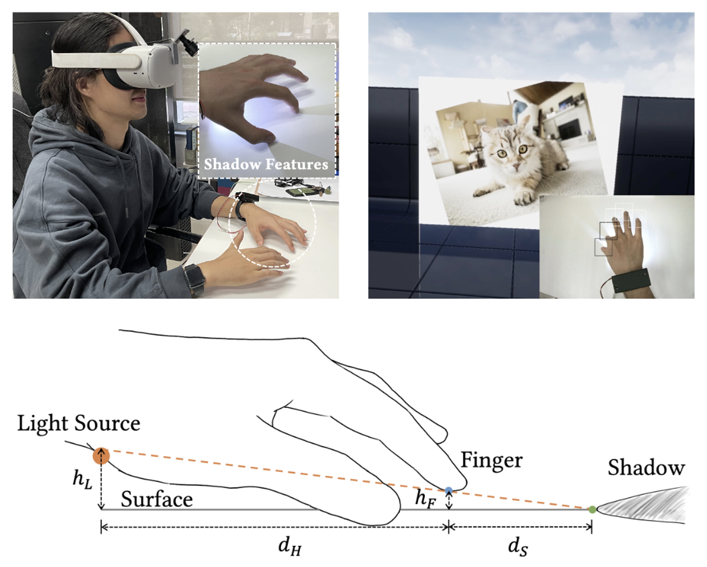
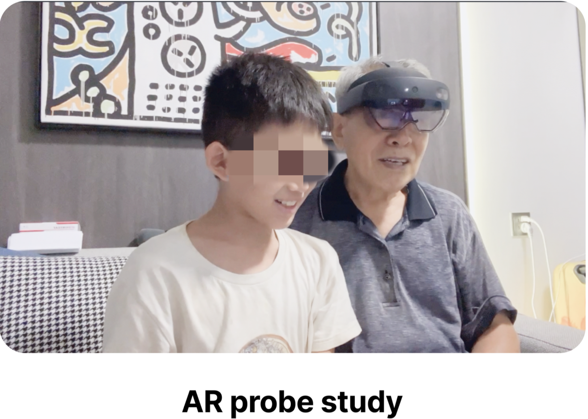
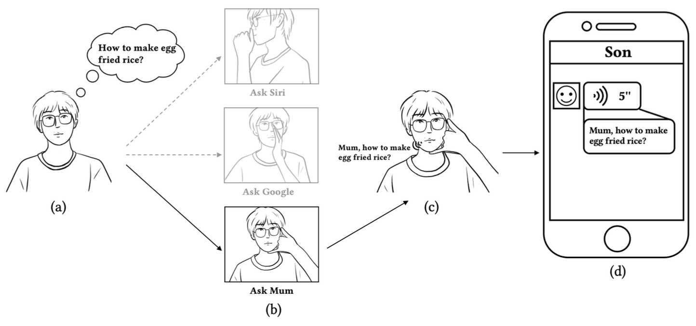
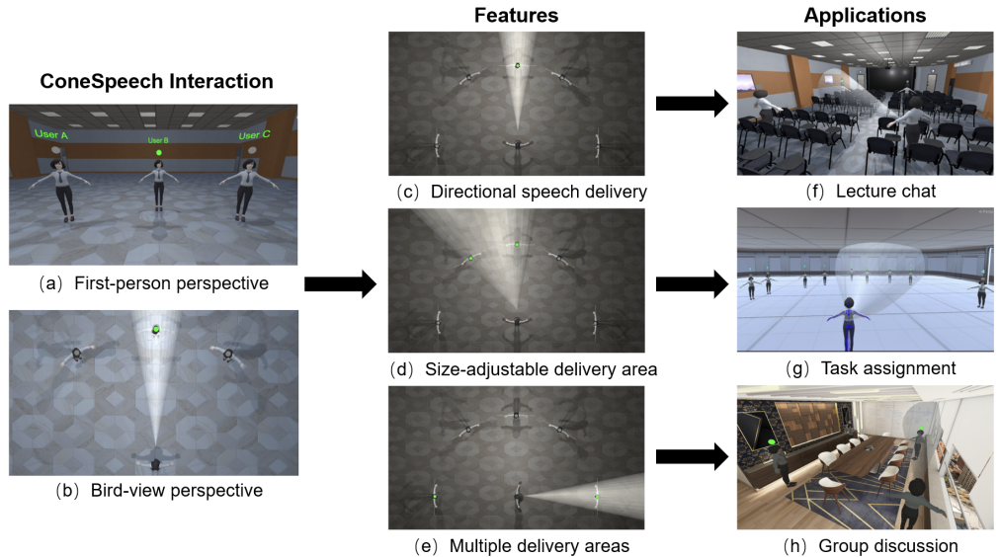

RealTwin: Concept Graph Representation and Grounding Framework for Reality-Preserving Digital Twin Reconstruction
CHI 2026
I am a postdoctoral researcher at Nanyang Technological University (NTU), Singapore, advised by Prof. Wenya Wang and Prof. Hanwang Zhang.
I received my Ph.D. from the Hong Kong University of Science and Technology (HKUST), where I was co-supervised by Prof. Mingming Fan and Prof. Xiaojuan Ma. During my doctoral studies, I was a visiting Ph.D. student in the HCIE Group at MIT CSAIL, advised by Prof. Stefanie Mueller.
My research centers on generative interaction grounded in the physical world, driven by the belief that understanding the physical world means understanding how humans can act within it and how it responds. I investigate how human intent, object affordances, and material dynamics can guide the generation of interactive behaviors, enabling digital objects and environments to respond to manipulation, adapt to context, and support open-ended exploration. By combining structured representations with interactive generative models, I aim to build digital worlds that respond coherently to actions in real time and remain consistent as interactions unfold. This perspective extends from interactive digital twins and mixed reality toward embodied intelligence and world action models, where humans and embodied agents can explore possibilities, anticipate consequences, and learn through interaction.

CHI 2026

ECCV 2026

IMWUT 2026




UbiComp 2023


TVCG 2023
Best Paper Nominee